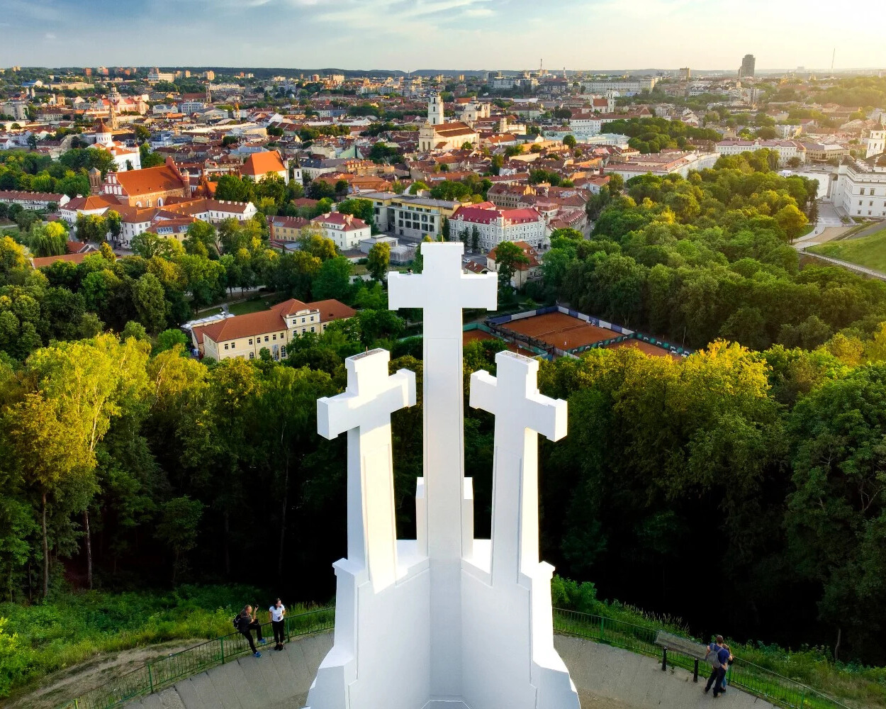

"Vilnius Through My Lens: A Local’s Love List"
Vilnius — More Than Just a Capital.
Vilnius is the capital of and largest city in Lithuania and the most-populous city in the Baltic states. The city's estimated January 2025 population was 607,404, and the Vilnius urban area (which extends beyond the city limits) has an estimated population of 747,864.
Vilnius is notable for the architecture of its Old Town, considered one of Europe's largest and best-preserved old towns. The city was declared a UNESCO World Heritage Site in 1994. The architectural style known as Vilnian Baroque is named after the city, which is farthest to the east among Baroque cities and the largest such city north of the Alps.
The city was noted for its multicultural population during the Polish–Lithuanian Commonwealth, with contemporary sources comparing it to Babylon. Before World War II and the Holocaust, Vilnius was one of Europe's most important Jewish centers. Its Jewish influence has led to its being called "the Jerusalem of Lithuania", and Napoleon called it "the Jerusalem of the North" when he passed through in 1812.
Vilnius was a 2009 European Capital of Culture with Linz in Austria. In 2021, the city was named one of fDi's 25 Global Cities of the Future. Vilnius is considered a global financial centre, ranked 76th globally and 29th in Europe on the Global Financial Centres Index. The city is an important center for the global fintech industry. It hosted the 2023 NATO Summit. In 2025 Vilnius was the European Green Capital. Vilnius is a member of Eurocities and the Union of Capitals of the European Union (UCEU).
Most Loved Places
The Gediminas’ Tower
The symbol of Vilnius is visible from many spots in the Old Town and is portrayed in numerous works of art. It is one of the best places to see the magnificent panoramas of Vilnius. Climb Gediminas’ Hill and admire the sunset or go up even higher to the top of the Gediminas Tower for more spectacular views. The red roofs of Vilnius, the church towers, and the narrow streets of the Medieval Old Town are a stunning sight. The tower houses a historic exhibition displaying reconstruction models of the castles of Vilnius, an armament, and iconographic material of old Vilnius.
Brief History:
Gediminas’ Castle Tower is the remaining fortification tower of
the Upper Castle. Legend has it that the Grand Duke Gediminas
dreamt of an Iron Wolf howling at the top of this hill, which he
took as a prophecy of the great city that would one day stand in
this place. The hill is where he eventually built a wooden castle.
Grand Duke Vytautas completed the city’s first brick castle in 1409. Gediminas’ Tower has changed purposes since then, including being used as the city’s first telegraph building in 1838. The Lithuanian flag was first flown at the top of the tower a century ago. The Vilnius Castle Museum was opened in 1960, and in 1968 it became a subdivision of the Lithuanian National Museum.
The Hill of Three Crosses
Standing atop the hill that bears its name, the Three Crosses memorial consists of three white reinforced concrete crosses that are visible from afar. Climb the hill and you’ll see vast panoramas of Vilnius Old Town. Plus, the Bernardine Garden and Vilnele River are right at the foot of the hill. This 12-metre tall monument has become a symbol of national identity, but the crosses themselves are often illuminated in different colours to commemorate special events for Lithuania and the world. So whenever you can see the monument while walking around the city after dark, take a look to see if it’s lit up in special colours.
Brief History:
A wooden castle was built on the hill in the 12th and 13th
centuries, and a settlement was later established in its place.
The hill got its name after Franciscans died as martyrs when
pagans tied them to crosses and threw them down the hill. The
three crosses were erected to commemorate this event. The current
monument was created by architect and sculptor A. Vivulskis in
1916 and rebuilt in 1988.
Trakai Castle
The castle is famous for its gothic architecture and its special location – it stands on an island on Lake Galve, one of the deepest lakes in Lithuania. The view of the historic structure is s traight out of a fairy tale. You can reach the castle by crossing the long wooden bridge. In the winter the lake freezes over and becomes a natural skating rink. You can also take in a special view of the castle from a yacht.
Visit the museum inside the castle to explore the exhibitions of the Grand Dukes of Lithuania, various archaeological findings and artefacts, as well as a collection of art. In the summer there are medieval festivals as well as various events and concerts in the castle’s courtyard.
Brief History:
The castle was built in the 14th century and served as a residence
for the Grand Dukes of Lithuania. However, the structure fell into
disarray in the 17th century and was only rebuilt in 1951. In
1962, the castle became a part of the Trakai History Museum.
More Places You’ll Want to See
-
Galleries
- Lithuanian National Museum of Art - Vilnius Picture Gallery
- Open Gallery
- Tartle
- Paupys Art Gallery
- Lithuanian National Museum of Art - National Gallery of Art
- Jonas Mekas Visual Arts Centre
- Adam Mickewicz Public Library
- Užupis Art Incubator
- Contemporary Art Centre
- Amber Museum - Gallery
-
Street Art & Architecture
- Stotis District
- Jonas Mekas Draught Alley
- Literatai street
- Wooden Architecture
-
Churches & Pilgrimage
- Gates of Dawn
- Church of St. Anne and Bernardine Complex
- The Cathedral Basilica of St. Stanislaus and St. Ladislaus
- The Church Heritage Museum
- Church of St. Peter and St. Paul
- The Shrine of Divine Mercy
-
Viewpoints
- Television Tower
- The Bastion of Vilnius City Wall
- Tauras Hill
- Altana Hill
-
Parks
- Botanical Garden of Vilnius University
- Pavilniai Regional Park
- Vingis Park
- Bernardine Garden
- Neris Regional Park
If you're curious to learn more, check out these sources:
Maecenas lacinia felis nec placerat sollicitudin. Quisque placerat dolor at scelerisque imperdiet. Phasellus tristique felis dolor.
Maecenas elementum in risus sed condimentum. Duis convallis ante ac tempus maximus. Fusce malesuada sed velit ut dictum. Morbi faucibus vitae orci at euismod. Integer auctor augue in erat vehicula, quis fermentum ex finibus.
Mauris pretium elit a dui pulvinar, in ornare sapien euismod. Nullam interdum nisl ante, id feugiat quam euismod commodo. Sed ultrices lectus ut iaculis rhoncus. Aenean non dignissim justo, at fermentum turpis. Sed molestie, ligula ut molestie ultrices, tellus ligula viverra neque, malesuada consectetur diam sapien volutpat risus. Quisque eget tortor lobortis, facilisis metus eu, elementum est. Nunc sit amet erat quis ex convallis suscipit. ur ridiculus mus.